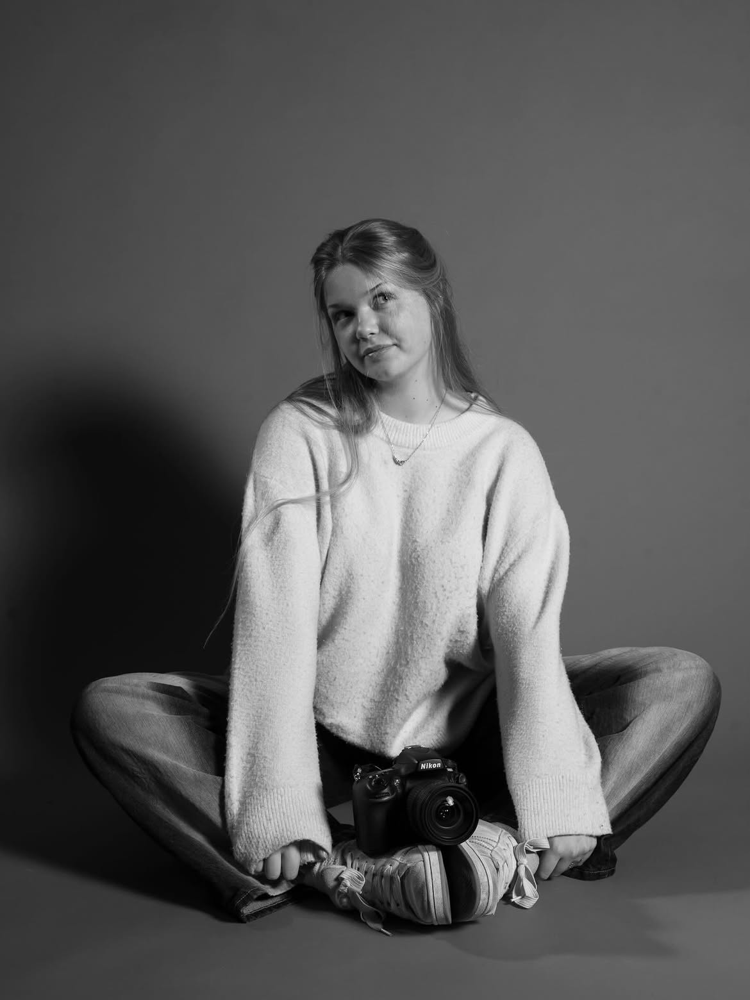

Sanne Roeland / Fotografie
Open voor jouw ideeënEven
anders kijken.
Mensen. Kleine details. Onverwachte momenten. Ik ben Sanne, en dit is de wereld door mijn lens.

01 / Door mijn lens
Een blik.
Een verhaal.
Wat me opvalt, raakt of even laat stilstaan. Een kleine selectie, met aandacht gemaakt.
Sanne, in beeld.
Van iets dichterbij.
Mijn favoriete plek.
Er komt meer aan.Voor nu gebruiken deze beelden hetzelfde portret. Nieuw werk volgt binnenkort.
02 / De persoon achter de camera
Hi, ik ben
Sanne.
Ik fotografeer vooral mensen, maar richt mijn camera ook graag op natuur en kleine details. Vaak zit het mooiste juist in de dingen waar je zo aan voorbijloopt.
Op deze plek deel ik wat ik maak. En misschien maken we binnenkort wel iets samen.
Leer me kennen op Instagram (opent in een nieuw tabblad)Van een idee naar een herinnering
Jij een idee.
Ik een camera.
Een portret, een bijzonder moment of iets dat nog geen naam heeft. Vertel me wat je in gedachten hebt. Dan kijken we samen wat we kunnen maken.
Laten we het bespreken03 / Het begint met hallo
Samen iets
moois maken?
Ik hoor graag wat je in gedachten hebt.
Stuur me een bericht, dan praten we verder.